Linear Systems
Preamble (Code)
from numpy import *
from numpy.linalg import *
from matplotlib.pyplot import *
from mpl_toolkits.mplot3d import *
from scipy.integrate import solve_ivpPreamble
Inputs
It’s handy to introduce non-autonomous ODEs.
There are designated as
\[ \dot{x} = f(x, u) \]
where \(x \in \mathbb{R}^n\) and \(u \in \mathbb{R}^m\), that is
\[f: \mathbb{R}^n \times \mathbb{R}^m \to \mathbb{R}^n.\]
The vector-valued \(u\) is the system input.
This quantity may depend on the time \(t\)
\[ u: t \in \mathbb{R} \mapsto u(t) \in \mathbb{R}^m, \]
(actually it may also depend on some state, but we will adress this later).
A solution of
\(\dot{x} = f(x, u)\) and \(x(t_0) = x_0\)
is merely a solution of
\(\dot{x} = h(t,x)\) and \(x(t_0) = x_0\),
where
\(h(t, x) = f(x, u(t))\).
Outputs
We may complement the system dynamics with an equation
\[ y = g(x, u) \in \mathbb{R}^p \]
The vector \(y\) refers to the systems output, usually the quantities that we can effectively measure in a system (the state \(x\) itself may be unknown).
What Are Linear Systems?
Standard Form
Input \(u \in \mathbb{R}^m\), state \(x \in \mathbb{R}^n\), output \(y \in \mathbb{R}^p\).
\[ \begin{array}{c} \dot{x} &=& A x + B u \\ y &=& C x + D u \end{array} \]
Why Linear ?
Assume that:
\(\dot{x}_1 = A x_1 + B u_1\), \(x_1(0) = x_{10}\),
\(\dot{x}_2 = A x_2 + B u_2\), \(x_2(0) = x_{20}\),
Set
\(u_3 = \lambda u_1 + \mu u_2\) and
\(x_{30} = \lambda x_{10} + \mu x_{20}\).
for some \(\lambda\) and \(\mu\).
Then, if
\[x_3 = \lambda x_1 + \mu x_2,\]
we have
\[ \dot{x}_3 = A x_3 + B u_3, \; x_3(0) = x_{30}. \]
Internal + External Dynamics
Corollary: Since \((x_0, u) = (x_0, 0) + (0, u)\) the solution of
\[ \dot{x} = A x + Bu, \; x(0) = x_0 \]
is the sum of the solutions \(x_1\) and \(x_2\) of:
the internal dynamics
\[ \dot{x}_1 = A x_1, \; x_1(0) = x_0 \]
(behavior controlled by the initial value only, no input)
and the external dynamics:
\[ \dot{x}_2 = A x_2 + Bu, \; x_2(0) = 0 \]
(behavior controlled by the input, the systems is initially at rest)
Matrix Size
\(A \in \mathbb{R}^{n \times n}\), \(B \in \mathbb{R}^{n\times m}\), \(C \in \mathbb{R}^{p \times n}\), \(D \in \mathbb{R}^{p \times m}\).
\[ \left[ \begin{array}{c|c} A & B \\ \hline C & D \end{array} \right] \]
LTI Systems
They are actually referred to as linear time-invariant (LTI) systems:
When \(x(t)\) is a solution of
\[ \dot{x} = A x + Bu, \; x(0) = x_0, \]
then \(x(t- t_0)\) is a solution of
\[ \dot{x} = A x + Bu(t-t_0), \; x(t_0) = x_0. \]
– Linear System / Heat Equation

Simplified Model
Four cells numbered 1 to 4 are arranged in a row.
The first cell has a heat source, the last one a temperature sensor.
The heat sink/source is increasing the temperature of its cell of \(u\) degrees by second.
If the temperature of a cell is \(T\) and the one of a neighbor is \(T_n\), \(T\) increases of \(T_n - T\) by second.
Given the geometric layout:
\(d T_1/dt = u + (T_2 - T_1)\)
\(d T_2/dt = (T_1 - T_2) + (T_3 - T_2)\)
\(d T_3/dt = (T_2 - T_3) + (T_4 - T_3)\)
\(d T_4/dt = (T_3 - T_4)\)
\(y = T_4\)
Set \(x = (T_1, T_2, T_3, T_4)\).
The model is linear and its standard matrices are:
\[ A = \left[ \begin{array}{rrrr} -1 & 1 & 0 & 0 \\ 1 & -2 & 1 & 0 \\ 0 & 1 & -2 & 1 \\ 0 & 0 & 1 & -1 \end{array} \right] \]
\[ B = \left[ \begin{array}{c} 1 \\ 0 \\ 0 \\ 0 \end{array} \right], \; C = \left[ \begin{array}{cccc} 0 & 0 & 0 & 1 \end{array} \right], \; D = [0] \]
Nonlinear to Linear
Consider the nonlinear system
\[ \begin{array}{ccc} \dot{x} &=& f(x, u) \\ y &=& g(x, u) \end{array} \]
Assume that \(x_e\) is an equilibrium when \(u=u_e\) (cst):
\[ f(x_e, u_e) = 0 \]
and let
\[ y_e = g(x_e, u_e) \]
Define the error variables
\(\Delta x = x - x_e\),
\(\Delta u = u - u_e\) and
\(\Delta y = y - y_e\).
As long as the error variables stay small
\[ f(x, u) \simeq \overbrace{f(x_e, u_e)}^0 + \frac{\partial f}{\partial x}(x_e, u_e) \Delta x + \frac{\partial f}{\partial u}(x_e, u_e) \Delta u \]
\[ g(x, u) \simeq \overbrace{g(x_e, u_e)}^{y_e} + \frac{\partial g}{\partial x}(x_e, u_e) \Delta x + \frac{\partial g}{\partial u}(x_e, u_e) \Delta u \]
Hence, the error variables satisfy approximately
\[ \begin{array}{c} d(\Delta x)/dt &=& A \Delta x + B \Delta u \\ \Delta y &=& C \Delta x + D \Delta u \end{array} \]
with
\[ \left[ \begin{array}{c|c} A & B \\ \hline C & D \end{array} \right] = \left[ \begin{array}{c|c} \frac{\partial f}{\partial x} & \frac{\partial f}{\partial u} \\ \hline \frac{\partial g}{\partial x} & \frac{\partial g}{\partial u} \end{array} \right](x_e, u_e) \]
Asymptotic Stability
The equilibrium \(0\) is locally asymptotically stable for
\[ \frac{d \Delta x}{dt} = A \Delta x \]
where \(A = \partial f (x_e, u_e) / \partial x.\)
\(\Rightarrow\)
The equilibrium \(x_e\) is locally asymptotically stable for
\[ \dot{x} = f(x, u_e) \]
Converse Result
The converse is not true : the nonlinear system may be asymptotically stable but not its linearized approximation (e.g. consider \(\dot{x} = -x^3\)).
If we replace local asymptotic stability with local exponential stability, the requirement that locally
\[ \|x(t) - x_e\| \leq A e^{-\sigma t} \|x(0) - x_e\| \]
for some \(A >0\) and \(\sigma > 0\), then it works.
– Linearization
Consider
\[ \dot{x} = -x^2 + u, \; y = x u \]
If we set \(u_e = 1\), the system has an equilibrium at \(x_e = 1\) (and also \(x_e = -1\) but we focus on the former) and the corresponding \(y\) is \(y_e = x_e u_e = 1\).
Around this configuration \((x_e, u_e) = (1, 1)\), we have
\[ \frac{\partial (-x^2+u)}{\partial x} = -2x_e = -2, \; \frac{\partial (-x^2+u)}{\partial u} = 1, \]
and
\[ \frac{\partial x u }{\partial x} = u_e = 1, \; \frac{\partial x u}{\partial u} = x_e = 1. \]
Thus, the approximate, linearized dynamics around this equilibrium is
\[ \begin{array}{rcr} d(x-1)/dt &=& -2 (x - 1) + (u - 1) \\ y -1 &=& (x - 1) + (u - 1) \end{array} \]
– Linearized Dynamics / Pendulum
A pendulum submitted to a torque \(c\) is governed by
\[ m \ell^2 \ddot{\theta} + b \dot{\theta} + m g \ell \sin \theta = c. \]
We assume that only the angle \(\theta\) is effectively measured.
What are the function \(f\) and \(g\) that determine the nonlinear dynamics of the pendulum when \(x=(\theta, \dot{\theta})\), \(u=c\) and \(y=\theta\)?
Show that for any angle \(\theta_e\) we can find a constant value \(c_e\) of the torque such that \(x_e = (\theta_e, 0)\) is an equilibrium.
Compute the linearized dynamics of the pendulum around this equilibrium and put it in the standard form (compute \(A\), \(B\), \(C\) and \(D\)).
Internal Dynamics
We study the behavior of the solution
\[ \dot{x} = A x, \; x(0) = x_0 \in \mathbb{R}^n \]
We try to get some understanding with the simplest cases first.
Scalar Case, Real-Valued
\[ \dot{x} = a x \]
\(a \in \mathbb{R}\), \(x(0) = x_0 \in \mathbb{R}\).
Solution: \[ x(t) = e^{a t} x_0 \]
Proof: \[ \frac{d}{dt} e^{at} x_0 = a e^{at} x_0 = a x(t) \] and \[ x(0) = e^{a \times 0} x_0 = x_0. \]
Trajectory
a = 2.0; x0 = 1.0
figure()
t = linspace(0.0, 3.0, 1000)
plot(t, exp(a*t)*x0, "k")
xlabel("$t$"); ylabel("$x(t)$"); title(f"$a={a}$")
grid(); axis([0.0, 2.0, 0.0, 10.0])Trajectory
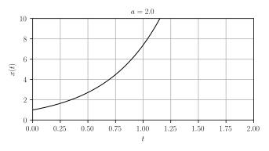
figure()
plot(real(a), imag(a), "x", color="k", ms=10.0)
gca().set_aspect(1.0)
xlim(-3,3); ylim(-3,3);
plot([-3,3], [0,0], "k")
plot([0, 0], [-3, 3], "k")
xticks([-2,-1,0,1,2]); yticks([-2,-1,0,1,2])
title(f"$a={a}$")
grid(True)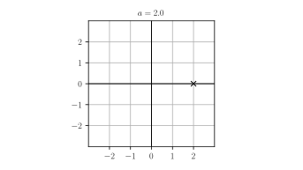
a = 1.0; x0 = 1.0
figure()
t = linspace(0.0, 3.0, 1000)
plot(t, exp(a*t)*x0, "k")
xlabel("$t$"); ylabel("$x(t)$"); title(f"$a={a}$")
grid(); axis([0.0, 2.0, 0.0, 10.0])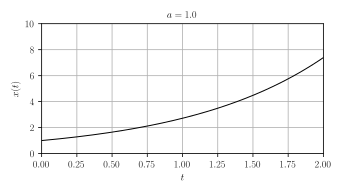
figure()
plot(real(a), imag(a), "x", color="k", ms=10.0)
gca().set_aspect(1.0)
xlim(-3,3); ylim(-3,3);
plot([-3,3], [0,0], "k")
plot([0, 0], [-3, 3], "k")
xticks([-2,-1,0,1,2]); yticks([-2,-1,0,1,2])
title(f"$a={a}$")
grid(True)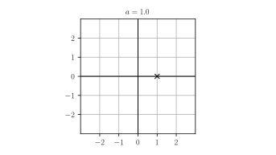
a = 0.0; x0 = 1.0
figure()
t = linspace(0.0, 3.0, 1000)
plot(t, exp(a*t)*x0, "k")
xlabel("$t$"); ylabel("$x(t)$"); title(f"$a={a}$")
grid(); axis([0.0, 2.0, 0.0, 10.0])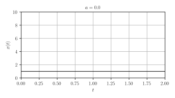
figure()
plot(real(a), imag(a), "x", color="k", ms=10.0)
gca().set_aspect(1.0)
xlim(-3,3); ylim(-3,3);
plot([-3,3], [0,0], "k")
plot([0, 0], [-3, 3], "k")
xticks([-2,-1,0,1,2]); yticks([-2,-1,0,1,2])
title(f"$a={a}$")
grid(True)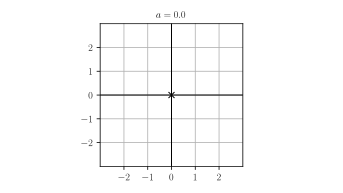
a = -1.0; x0 = 1.0
figure()
t = linspace(0.0, 3.0, 1000)
plot(t, exp(a*t)*x0, "k")
xlabel("$t$"); ylabel("$x(t)$"); title(f"$a={a}$")
grid(); axis([0.0, 2.0, 0.0, 10.0])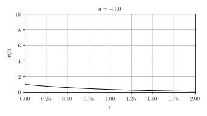
figure()
plot(real(a), imag(a), "x", color="k", ms=10.0)
gca().set_aspect(1.0)
xlim(-3,3); ylim(-3,3);
plot([-3,3], [0,0], "k")
plot([0, 0], [-3, 3], "k")
xticks([-2,-1,0,1,2]); yticks([-2,-1,0,1,2])
title(f"$a={a}$")
grid(True)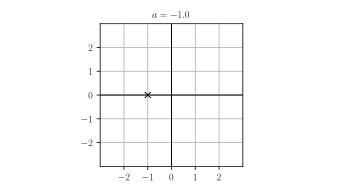
a = -2.0; x0 = 1.0
figure()
t = linspace(0.0, 3.0, 1000)
plot(t, exp(a*t)*x0, "k")
xlabel("$t$"); ylabel("$x(t)$"); title(f"$a={a}$")
grid(); axis([0.0, 2.0, 0.0, 10.0])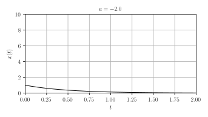
figure()
plot(real(a), imag(a), "x", color="k", ms=10.0)
gca().set_aspect(1.0)
xlim(-3,3); ylim(-3,3);
plot([-3,3], [0,0], "k")
plot([0, 0], [-3, 3], "k")
xticks([-2,-1,0,1,2]); yticks([-2,-1,0,1,2])
title(f"$a={a}$")
grid(True)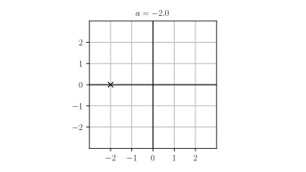
Analysis
The origin is globally asymptotically stable when \(a < 0.0\):
\(a\) is in the open left-hand plane,In this case, define the time constant \(\tau = - 1 / a\):
\[ x(t) = e^{at} x_0 = e^{-t/\tau} x_0 \]
\(\tau\) controls the time it take for the solution to (almost) reach to the origin:
when \(t = \tau\), \(|x(t)|\) is \(\simeq\) \(1/3\) of \(|x_0|\);
when \(t = 3 \tau\), \(|x(t)|\) is \(\simeq\) \(5 \%\) of \(|x_0|\).
Vector Case, Diagonal, Real-Valued
\[ \dot{x}_1 = a_1 x_1, \; x_1(0) = x_{10} \]
\[ \dot{x}_2 = a_2 x_2, \; x_2(0) = x_{20} \]
i.e.
\[ A = \left[ \begin{array}{cc} a_1 & 0 \\ 0 & a_2 \end{array} \right] \]
Solution: by linearity
\[ x(t) = e^{a_1 t} \left[\begin{array}{c} x_{10} \\ 0 \end{array}\right] + e^{a_2 t} \left[\begin{array}{c} 0 \\ x_{20} \end{array}\right] \]
a1 = -1.0; a2 = 2.0; x10 = x20 = 1.0
figure()
t = linspace(0.0, 3.0, 1000)
x1 = exp(a1*t)*x10; x2 = exp(a2*t)*x20
xn = sqrt(x1**2 + x2**2)
plot(t, xn , "k")
plot(t, x1, "k--")
plot(t, x2 , "k--")
xlabel("$t$"); ylabel("$\|x(t)\|$"); title(f"$a_1={a1}, \; a_2={a2}$")
grid(); axis([0.0, 2.0, 0.0, 10.0])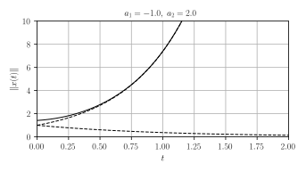
figure()
plot(real(a1), imag(a1), "x", color="k", ms=10.0)
plot(real(a2), imag(a2), "x", color="k", ms=10.0)
gca().set_aspect(1.0)
xlim(-3,3); ylim(-3,3);
plot([-3,3], [0,0], "k")
plot([0, 0], [-3, 3], "k")
xticks([-2,-1,0,1,2]); yticks([-2,-1,0,1,2])
title(f"$a_1={a1}, \; a_2={a2}$")
grid(True)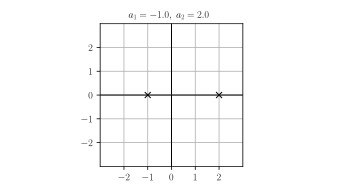
a1 = -1.0; a2 = -2.0; x10 = x20 = 1.0
figure()
t = linspace(0.0, 3.0, 1000)
x1 = exp(a1*t)*x10; x2 = exp(a2*t)*x20
xn = sqrt(x1**2 + x2**2)
plot(t, xn , "k")
plot(t, x1, "k--")
plot(t, x2 , "k--")
xlabel("$t$"); ylabel("$\|x(t)\|$"); title(f"$a_1={a1}, \; a_2={a2}$")
grid(); axis([0.0, 2.0, 0.0, 10.0])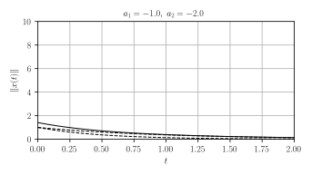
figure()
plot(real(a1), imag(a1), "x", color="k", ms=10.0)
plot(real(a2), imag(a2), "x", color="k", ms=10.0)
gca().set_aspect(1.0)
xlim(-3,3); ylim(-3,3);
plot([-3,3], [0,0], "k")
plot([0, 0], [-3, 3], "k")
xticks([-2,-1,0,1,2]); yticks([-2,-1,0,1,2])
title(f"$a_1={a1}, \; a_2={a2}$")
grid(True)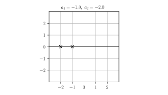
Analysis
The rightmost \(a_i\) determines the asymptotic behavior,
The origin is globally asymptotically stable only when every \(a_i\) is in the open left-hand plane.
Scalar Case, Complex-Valued
\[ \dot{x} = a x \]
\(a \in \mathbb{C}\), \(x(0) = x_0 \in \mathbb{C}\).
Solution: formally, the same old solution
\[ x(t) = e^{at} x_0 \]
But now, \(x(t) \in \mathbb{C}\):
if \(a = \sigma + i \omega\) and \(x_0 = |x_0| e^{i \angle x_0}\)
\[ |x(t)| = |x_0| e^{\sigma t} \, \mbox{ and } \, \angle x(t) = \angle x_0 + \omega t. \]
a = 1.0j; x0=1.0
figure()
t = linspace(0.0, 20.0, 1000)
plot(t, real(exp(a*t)*x0), label="$\mathrm{Re}(x(t))$")
plot(t, imag(exp(a*t)*x0), label="$\mathrm{Im}(x(t))$")
xlabel("$t$")
legend(); grid()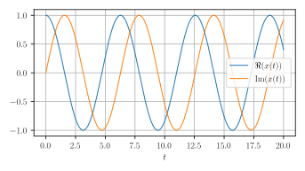
fig = figure()
ax = fig.add_subplot(111, projection="3d")
zticks = ax.set_zticks
ax.plot(t, real(exp(a*t)*x0), imag(exp(a*t)*x0))
xticks([0.0, 20.0]); yticks([]); zticks([])
ax.set_xlabel("$t$")
ax.set_ylabel("$\mathrm{Re}(x(t))$")
ax.set_zlabel("$\mathrm{Im}(x(t))$")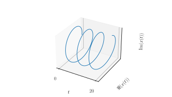
figure()
plot(real(a), imag(a), "x", color="k", ms=10.0)
gca().set_aspect(1.0)
xlim(-3,3); ylim(-3,3);
plot([-3,3], [0,0], "k")
plot([0, 0], [-3, 3], "k")
xticks([-2,-1,0,1,2]); yticks([-2,-1,0,1,2])
title(f"$a={a}$")
grid(True)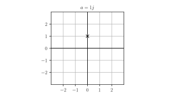
a = -0.5 + 1.0j; x0=1.0
figure()
t = linspace(0.0, 20.0, 1000)
plot(t, real(exp(a*t)*x0), label="$\mathrm{Re}(x(t))$")
plot(t, imag(exp(a*t)*x0), label="$\mathrm{Im}(x(t))$")
xlabel("$t$")
legend(); grid()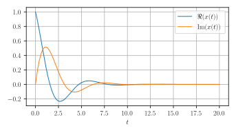
fig = figure()
ax = fig.add_subplot(111, projection="3d")
zticks = ax.set_zticks
ax.plot(t, real(exp(a*t)*x0), imag(exp(a*t)*x0))
xticks([0.0, 20.0]); yticks([]); zticks([])
ax.set_xlabel("$t$")
ax.set_ylabel("$\mathrm{Re}(x(t))$")
ax.set_zlabel("$\mathrm{Im}(x(t))$")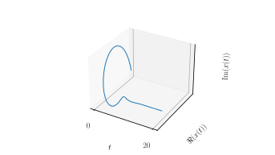
figure()
plot(real(a), imag(a), "x", color="k", ms=10.0)
gca().set_aspect(1.0)
xlim(-3,3); ylim(-3,3);
plot([-3,3], [0,0], "k")
plot([0, 0], [-3, 3], "k")
xticks([-2,-1,0,1,2]); yticks([-2,-1,0,1,2])
title(f"$a={a}$")
grid(True)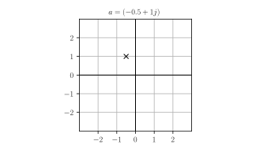
Analysis
the origin is globally asymptotically stable if \(a\) is in the open left-hand plane: \[\mathrm{Re} (a) < 0\]
if \(a= \sigma + i \omega\),
\(\tau = -1 /\sigma\) is the time constant related of the speed of convergence,
\(\omega\) the (rotational) frequency of the (damped) oscillations.
Only one step left before the (almost) general case …
Exponential Matrix
If \(M \in \mathbb{C}^{n \times n}\), the exponential is defined as:
\[ e^{M} = \sum_{i=0}^{+\infty} \frac{M^n}{n !} \in \mathbb{C}^{n \times n} \]
The exponential of a matrix \(M\) is not the matrix with elements \(e^{M_{ij}}\) (the elementwise exponential).
elementwise exponential:
exp(numpymodule),exponential:
expm(scipy.linalgmodule).
Exponential Matrix
Let
\[ M = \left[ \begin{array}{cc} 0 & 1 \\ 1 & 0 \end{array} \right] \]
[] Compute the exponential of \(M\).
Hint: \(\cosh x = \frac{e^x + e^{-x}}{2},\) \(\sinh x = \frac{e^x - e^{-x}}{2}.\)
[] Check the results with
expm.
Note that
\[ \begin{align} \frac{d}{dt} e^{A t} &= \frac{d}{dt} \sum_{n=0}^{+\infty} \frac{A^n}{n!} t^n \\ &= \sum_{n=1}^{+\infty} \frac{A^{n}}{(n-1)!} t^{n-1} \\ &= A \sum_{n=1}^{+\infty} \frac{A^{n-1}}{(n-1)!} t^{n-1} = A e^{A t} \end{align} \]
Thus, for any \(A \in \mathbb{C}^{n\times n}\) and \(x_0 \in \mathbb{C}^n\),
\[ \frac{d}{dt} (e^{A t} x_0) = A (e^{At} x_0) \]
Internal Dynamics
The solution of
\[ \dot{x} = A x\; \mbox{ and } \; x(0) = x_0 \]
is
\[ x(t) = e^{A t} x_0. \]
Stability Criteria
Let \(A \in \mathbb{C}^{n \times n}\).
The origin of \(\dot{x} = A x\) is globally asymptotically stable
\(\Longleftrightarrow\)
all eigenvalues of \(A\) have a negative real part.
G.A.S. \(\Leftrightarrow\) L.A.
Show that for a linear systems \(\dot{x} = Ax\), it is enough that the origin is locally attractive for the system to be globally asymptotically stable.
Why does this criteria work?
Assume that \(A\) is diagonalizable with eigenvalues \(\{\lambda_1, \dots, \lambda_n\}\).
(Very likely unless \(A\) has some special structure)
Then, there is an invertible matrix \(P \in \mathbb{C}^{n \times n}\) such that
\[ P^{-1} A P = \mathrm{diag}(\lambda_1, \dots, \lambda_n) = \left[ \begin{array}{cccc} \lambda_1 & 0 & \cdots & 0 \\ 0 & \lambda_2 & \cdots & 0 \\ \vdots & \vdots & \vdots & \vdots \\ 0 & \cdots & \cdots & \lambda_n \end{array} \right] \]
Thus, if \(y = P^{-1} x\), \(\dot{x} = A x\) is equivalent to
\[ \left| \begin{array}{ccc} \dot{y}_1 &=& \lambda_1 y_1 \\ \dot{y}_2 &=& \lambda_2 y_2 \\ \vdots &=& \vdots \\ \dot{y}_n &=& \lambda_n y_n \\ \end{array} \right. \]
The system is G.A.S. iff each component of the system is, which holds iff \(\mathrm{Re} \lambda_i < 0\) for each \(i\).
Stability / 2nd-order system
Consider the scalar ODE
\[ \ddot{x} + k x = 0, \; \mbox{ with } k > 0 \]
[] Determine the representation of this system as a first-order ODE with state \((x, \dot{x})\).
[, ] Is this system asymptotically stable?
[, ] If its solutions oscillate, determine its (rotational) frequency \(\omega\)?
[, ] Characterize the asymptotic behavior of \(x(t)\) when \(\ddot{x} + b \dot{x} + k x = 0\) for some \(b>0\).
Stability / Integrators
Consider the system
\[ \dot{x} = J x \; \mbox{ with } \; J = \left[ \begin{array}{cccc} 0 & 1 & 0 & \dots & 0 \\ 0 & 0 & 1 & \dots & 0 \\ \vdots & \vdots & \vdots & \vdots & \vdots \\ 0 & 0 & 0 & \dots & 1 \\ 0 & 0 & 0 & \dots & 0 \end{array} \right] \]
[, ] Compute the solution when
\[ x(0) = \left[ \begin{array}{c} 0 \\ \vdots \\ 0 \\ 1 \end{array} \right],\]
then for any initial condition.
[, ] Same questions when \(\dot{x} = (\lambda I + J)x\) for some \(\lambda \in \mathbb{C}\).
[] Is the system asymptotically stable ? Why does it matter in general?
I/O Behavior
Context
Assume that the system is “initially at rest”:
\[ x(0) = 0 \]
Forget about the state \(x(t)\) (may be unknown)
Study the input/output (I/O) relationship:
\[ u \to y \]
In this context, we have:
\[ y(t) = \int_0^{t} C e^{A(t-\tau)} B u(\tau) \, d\tau + D u(t) \]
Causal Signals
extend \(u(t)\) and \(y(t)\) by \(0\) when \(t<0\) (as causal signals).
introduce the Heaviside function defined by
\[ e(t) = \left| \begin{array}{c} 1 & \mbox{if } \; t\geq 0, \\ 0 & \mbox{if } \; t < 0. \end{array} \right. \]
Impulse Response
The system impulse response is defined by:
\[ H(t) = (C e^{At} B) \times e(t) + D \delta(t) \in \mathbb{R}^{p \times m} \]
works for general or MIMO systems.
MIMO = multiple-input & multiple-output systems.
\(\delta(t)\) is the unit impulse, we’ll get back to it (in the meantime, you may assume that \(D=0\)).
SISO Systems
When
\[p = m = 1\]
(single-input & single-output or SISO systems),
the \(1 \times 1\) matrix \(H(t)\) is identified with a scalar \(h(t)\):
\[ H(t) = [h(t)] \]
Then, we have:
\[ y(t) = \int_{-\infty}^{+\infty} H(t - \tau) u(\tau) \, d\tau \]
and denote \(\ast\) this operation between \(H\) and \(u\):
\[ y(t) = (H \ast u) (t) \]
It’s called a convolution.
Impulse Response
Consider the SISO system
\[ \left| \begin{array}{ccl} \dot{x} &=& ax + u \\ y &=& x \\ \end{array} \right. \]
where \(a \neq 0\).
We have
\[ \begin{split} H(t) &= (C e^{At} B) \times e(t) + D \delta(t)\\ &= [1]e^{[a]t} [1] e(t) + [0] \delta(t) \\ &= [e(t)e^{at}] \end{split} \]
When \(u(t) = e(t)\) for example,
\[ \begin{split} y(t) &= \int_{-\infty}^{+\infty} e(t - \tau)e^{a(t-\tau)} e(\tau) \, d\tau \\ &= \int_{0}^{t} e^{a(t- \tau)} \, d\tau \\ &= \int_{0}^{t} e^{a \tau} \, d\tau \\ &= \frac{1}{a} \left(e^{a t} - 1 \right) \end{split} \]
Impulse Response / Integrator
[] Compute the impulse response of the system
\[ \left| \begin{array}{ccc} \dot{x} &=& u \\ y &=& x \\ \end{array} \right. \]
where \(u \in \mathbb{R}\), \(x \in \mathbb{R}\) and \(y \in \mathbb{R}\).
Impulse Response / Double Integrator
[] Compute the impulse response of the system
\[ \left| \begin{array}{ccc} \dot{x}_1 &=& x_2 \\ \dot{x}_2 &=& u \\ y &=& x_1 \\ \end{array} \right. \]
where \(u \in \mathbb{R}\), \(x=(x_1, x_2) \in \mathbb{R}^2\) and \(y \in \mathbb{R}\).
Impulse Response / Gain
[] Compute the impulse response of the system
\[ y = K u \]
where \(u \in \mathbb{R}^m\), \(y \in \mathbb{R}^p\) and \(K \in \mathbb{R}^{p \times m}\).
Impulse Response / MIMO System
- [] Find a linear system with matrices \(A\), \(B\), \(C\), \(D\) whose impulse response is
\[ H(t) = \left[ \begin{array}{cc} e^{t} e(t) & e^{-t} e(t) \end{array} \right] \]
- [] Is there another set of matrices \(A\), \(B\), \(C\), \(D\) with the same impulse response? With a matrix \(A\) of a different size?
Laplace Transform
Associate to a scalar signal \(x(t) \in \mathbb{R}\), \(t\in \mathbb{R}\), the function of a complex argument \(s \in \mathbb{C}\):
\[ x(s) = \int_{-\infty}^{+\infty} x(t) e^{-st} \, dt. \]
defined when \(\mathrm{Re} \, (s) > \sigma\) if \(\|x(t)\| \leq K e^{\sigma t}\).
Notation
We use the same symbol (here “\(x\)”) to denote:
a signal \(x(t)\) and
its Laplace transform \(x(s)\)
They are two equivalent representations of the same “object”, but different mathematical “functions”.
If you fear some ambiguity, use named variables, e.g.:
\[ x(t=1) \, \mbox{ or } \, x(s=1) \, \mbox{ instead of } \, x(1). \]
Vector/Matrix-Valued Signals
The Laplace transform
of a vector-valued signal \(x(t) \in \mathbb{R}^n\) or
of a matrix-valued signals \(X(t) \in \mathbb{R}^{m \times n}\)
are computed elementwise.
\[ x_{i}(s) = \int_{-\infty}^{+\infty} x_{i}(t) e^{-st} \, dt. \]
\[ X_{ij}(s) = \int_{-\infty}^{+\infty} X_{ij}(t) e^{-st} \, dt. \]
Rational & Causal Signals
We will only deal with rational & causal signals:
\[ x(t) = \left(\sum_{\lambda \in \Lambda} p_{\lambda}(t) e^{\lambda t} \right) e(t) \]
where:
\(\Lambda\) is a finite subset of \(\mathbb{C}\),
for every \(\lambda \in \Lambda\), \(p_{\lambda}(t)\) is a polynomial in \(t\).
Such signals are causal since
\(x(t) = 0\) when \(t < 0\).
Causality \(\Leftrightarrow\) \(\deg n(s) \leq \deg d(s)\).
They are rational since
\[ x(s) = \frac{n(s)}{d(s)} \]
where \(n(s)\) and \(d(s)\) are polynomials.
Laplace Transform / Exponential
Set \(x(t) = e(t) e^{a t}\)
\[ \begin{split} x(s) &= \int_0^{+\infty} e^{at} e^{-s t} \, dt = \int_0^{+\infty} e^{(a-s) t} \, dt \\ &= \left[\frac{e^{(a-s) t}}{a-s} \right]^{+\infty}_0 = \frac{1}{s-a} \end{split} \]
(If \(\mathrm{Re} (s) \geq \mathrm{Re} \, (a) +\epsilon\), then \(|e^{(a-s)t}| \leq e^{-\epsilon t}\))
Symbolic Computations
import sympy
from sympy.abc import t, s, a
from sympy.integrals.transforms import laplace_transform
def L(f):
return laplace_transform(f, t, s)[0]xt = sympy.exp(a*t)
xs = L(xt) # 1/(-a + s)Laplace Transform / Ramp
Compute the Laplace Transform of
\[ x(t) = t e(t) \]
Convolution & Laplace
Let \(H(t)\) be the impulse response of a system.
Its Laplace transform \(H(s)\) is called the system transfer function.
For LTI systems in standard form, we have
\[ H(s) = C [sI - A]^{-1} B + D \]
Operational Calculus
The Laplace transform turns convolution into products:
\[ y(t) = (H \ast u)(t) \; \Longleftrightarrow \; y(s) = H(s) \times u(s) \]
Graphical Language
Control engineers used block diagrams to describe (combinations of) dynamical systems, with
“boxes” to determine the relation between input signals and output signals and
“wires” to route output signals to inputs signals.
Block-Diagram / Feedback

Triangles denote gains (scalar or matrix multipliers),
Adders sum (or substract) signals.
LTI systems can be specified with:
(differential) equations,
the impulse response,
the transfer function,
Equivalent Systems

Block-Diagram / Feedback
Compute the transfer function \(H(s)\) of the system depicted in the feedback block-diagram example.
Impulse Response
Why refer to \(h(t)\) as the system “impulse response”?
By the way, what’s an impulse?
Impulses Approximations
Pick a time constant \(\epsilon > 0\) and define
\[ \delta_{\epsilon}(t) = \frac{1}{\epsilon} e^{-t/\epsilon} e(t) \]
def delta(t, eps=1.0):
return exp(-t / eps) / eps * (t >= 0)figure()
t = linspace(-1,4,1000)
plot(t, delta(t, eps=1.0), "k:", label="$\epsilon=1.0$")
plot(t, delta(t, eps=0.5), "k--", label="$\epsilon=0.5$")
plot(t, delta(t, eps=0.25), "k", label="$\epsilon=0.25$")
xlabel("$t$"); title("$\delta_{\epsilon}(t)$")
legend()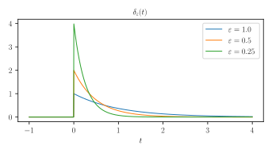
Impulses in the Laplace Domain
\[ \begin{split} \delta_{\epsilon}(s) &= \int_{-\infty}^{+\infty} \delta_{\epsilon}(t) e^{-st} \, dt \\ &= \frac{1}{\epsilon} \int_{0}^{+\infty} e^{-(s + 1/\epsilon)t} \, dt \\ &= \frac{1}{\epsilon} \left[ \frac{e^{-(s+1/\epsilon)t}}{-(s+1/\epsilon)} \right]^{+\infty}_0 = \frac{1}{1 + \epsilon s}\\ \end{split} \]
(assuming that \(\mathrm{Re}(s) > -1/\epsilon\))
The “limit” of the signal \(\delta_{\epsilon}(t)\) when \(\epsilon \to 0\) is not defined as a function (issue for \(t=0\)) but as a generalized function \(\delta(t)\), the unit impulse.
This technicality can be avoided in the Laplace domain where \[ \delta(s) = \lim_{\epsilon \to 0} \delta_{\epsilon}(s) = \lim_{\epsilon \to 0} \frac{1}{1 + \epsilon s} = 1. \]
Thus, if \(y(t) = (h \ast u)(t)\) and
\(u(t) = \delta(t)\) then
\(y(s) = h(s) \times \delta(s) = h(s) \times 1 = h(s)\)
and thus \(y(t) = h(t)\).
Conclusion: the impulse response \(h(t)\) is the output of the system when the input is the unit impulse \(\delta(t)\).
I/O Stability
A system is I/O-stable if there is a \(K \geq 0\) such that
\[ \mbox{for any } t\geq, \|y(t)\| \leq K M \]
whenever
\[ \mbox{for any } t\geq, \|u(t)\| \leq M \]
There is a bound on the amplification of the input signal that the system can provide.
Also called BIBO-stability (for “bounded input, bounded output”)
Transfer Function Poles
A pole of the transfer function \(H(s)\) is a \(s \in \mathbb{C}\) such that for at least one element \(H_{ij}(s)\),
\[ |H_{ij}(s)| = +\infty. \]
I/O-Stability Criteria
A system is I/O-stable if and only if all its poles are in the open left-plane, i.e. such that
\[ \mbox{Re}(s) < 0. \]
Internal Stability vs I/O-Stability
If the system \(\dot{x} = A x\) is asymptotically stable, then for any matrices \(B\), \(C\), \(D\) of appropriate sizes,
\[ \begin{split} \dot{x} &= A x + B u \\ y &= C x + Du \end{split} \]
is I/O-stable.
Fully Actuated & Measured System
If \(B=I\), \(C=I\) and \(D=0\), that is
\[ \dot{x} = A x +u, \; y = x \]
then \(H(s) = [sI-A]^{-1}\).
Therefore, \(s\) is a pole of \(H\) iff it’s an eigenvalue of \(A\).
Thus, in this case, asymptotic stability and I/O-stability are equivalent.
This equivalence holds under much weaker conditions.